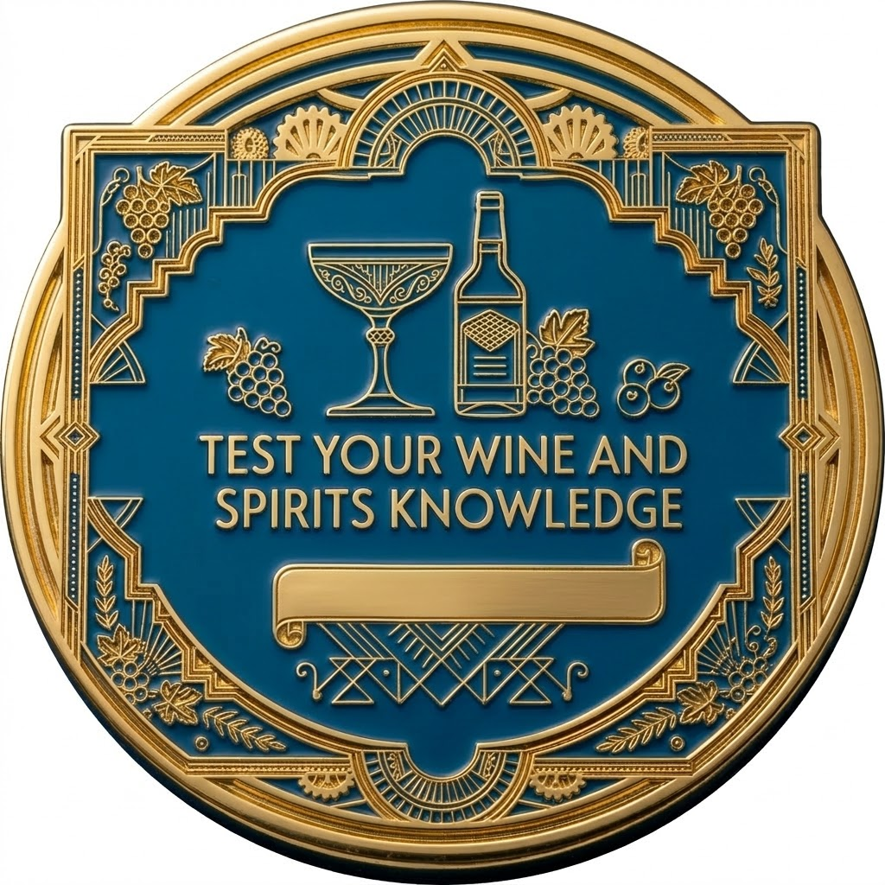

YouTube Videos
Loading videos…
Podcasts
Loading podcasts…

Curated wine & spirits videos & podcasts
— updated weekly

Wine & Spirits Professional | AI Implementation Specialist
With over two decades of experience in the wine and spirits trade, I have built a career at the intersection of industry expertise and innovation. From vineyard to glass, from grain to barrel, I understand the business of wine and spirits — the markets, the people, and the trends that shape these dynamic industries.
Wine & Spirits Media Hub is my curated collection of the best wine and spirits content on the web, bringing together videos and podcasts across every facet of the wine and spirits world — from business and trade to tasting, production, cocktails, and emerging regions.